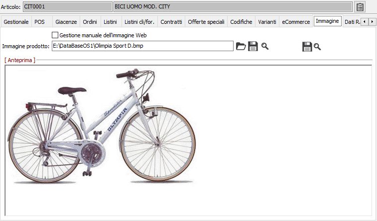
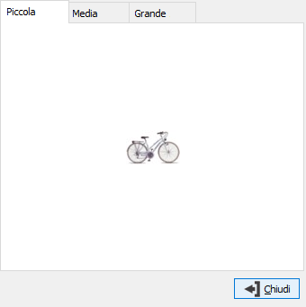
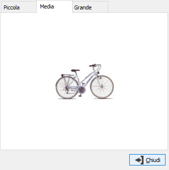
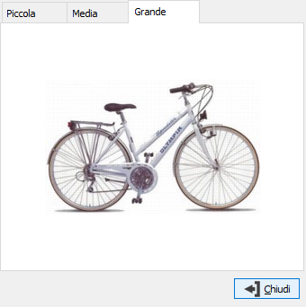

Pulsante utilizzato per visualizzare le immagini web, create con l'ausilio del pulsante precedente o manualmente. Viene visualizzata una finestra suddivisa in pagine dove vengono visualizzate le immagini gestite (piccola, media, grande).
Pulsante utilizzato per visualizzare le immagini web, create con l'ausilio del pulsante precedente o manualmente. Viene visualizzata una finestra suddivisa in pagine dove vengono visualizzate le immagini gestite (piccola, media, grande).Immagine
La sezione immagine consente di acquisire, indicandone il percorso, l’immagine del prodotto che può essere stampata unitamente alla stampa dei listini.

Le funzioni ed i campi elencati di seguito sono attivi solo in presenza del modulo eCommerce.
GESTIONE MANUALE IMMAGINI WEB: definisce che le immagini non siano generate automaticamente e disabilita il relativo pulsante.
Pulsante utilizzato per la generazione delle immagini web; utilizzando l'immagine relativa al prodotto attivo crea una serie di tre immagini adatte ad essere pubblicate su Web in base alle informazioni presenti in configurazione eCommerce. Non è attivo se presente la spunta sul campo 'Gestione manuale immagini Web'.
Pulsante utilizzato per visualizzare le immagini web, create con l'ausilio del pulsante precedente o manualmente. Viene visualizzata una finestra suddivisa in pagine dove vengono visualizzate le immagini gestite (piccola, media, grande).


